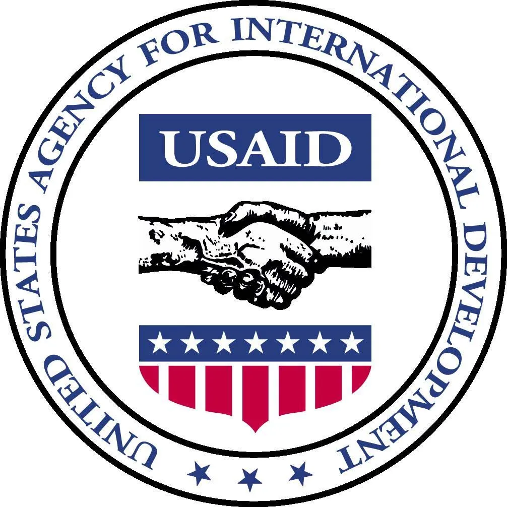

USAID-ის სოფლის მეურნეობის ოროგრამა აცხადებს ინსტიტუციური შესაძლებლობების განვითარების საგრანტო პროგრამის ახალ რაუნდს: საგრანტო პროგრამა არაკომერციული ბიზნესასოციაციებისთვის და არასამთავრობო ორგანიზაციებისთვის. პროგრამის მიზანია სასოფლო-სამეურნეო ღირებულებათა ჯაჭვების მონაწილეებს შორის ბიზნეს-კავშირების გაუმჯობესების ხელშეწყობა, რაც თავის მხრივ დაეხმარება ღირებულებათა ჯაჭვების გაძლიერებას და მათ მდგრად განვითარებას. ორგანიზაციის ინსტიტუციური და ტექნიკური შესაძლებლობების განვითარების გრანტი გაიცემა და განხორციელდება აშშ-ის საერთაშორისო განვითარების სააგენტოს (USAID) და აშშ-ის მთავრობის დებულებებისა და USAID-ის სოფლის მეურნეობის პროგრამის გრანტების ადმინისტრირების შიდა პოლიტიკის შესაბამისად.
თემა: სოფლის მეურნეობის სექტორის აქტორებს შორის ბიზნეს-კავშირების გაუმჯობესების ხელშეწყობა;
გამოცხადების თარიღი: 2022 წლის 19 დეკემბერი;
საინფორმაციო შეხვედრა: 2023 წლის 12 იანვარი, 14:00;
კითხვების გამოგზავნის ბოლო ვადა: 2023 წლის 9 იანვარი;
განაცხადების მიღების ბოლო ვადა:განაცხადების მიღების ბოლო ვადა: 2023 წლის 23 იანვარი.